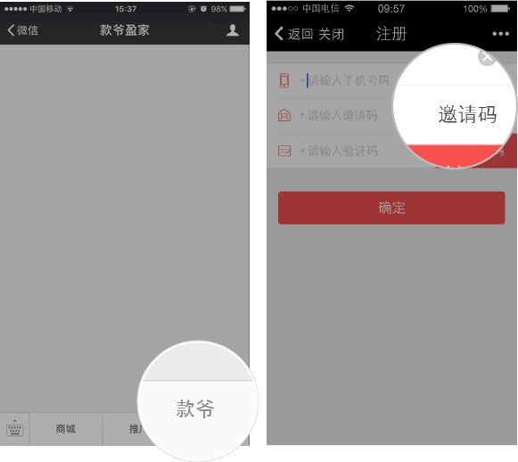
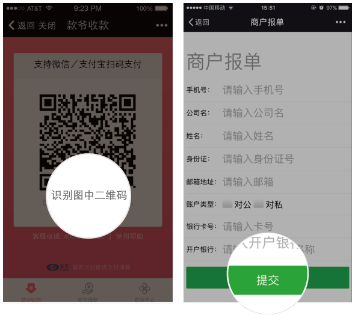
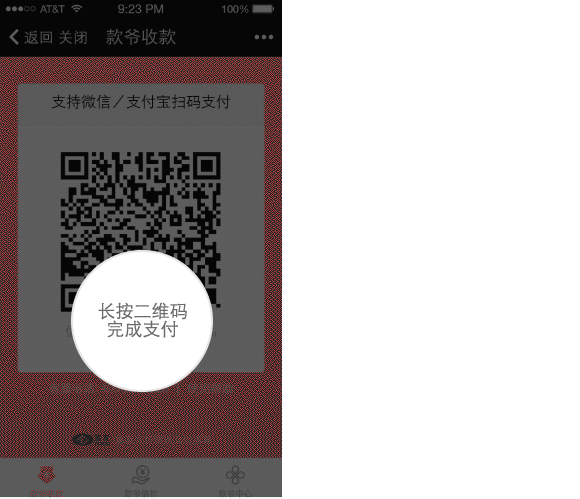
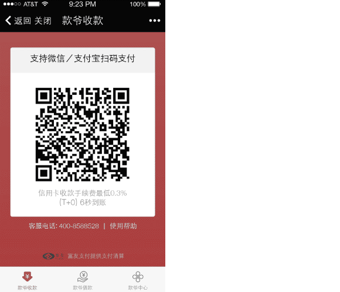
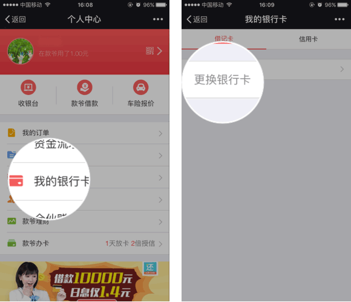
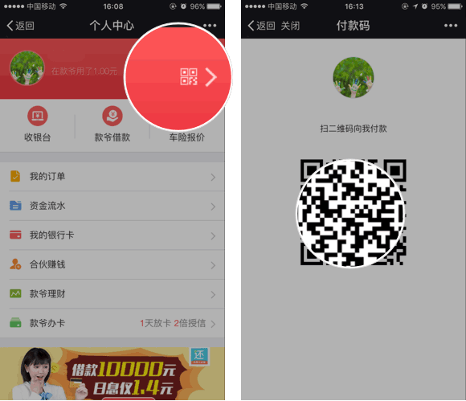

- 1. 用户注册
- 点击“款爷”进入注册页面,完成注册（邀请码可选填） 
- 2. 注册款爷收款商户
- （1）.进入“款爷收款”点击识别二维码，进入注册页面
（2）.填写绑卡信息，提交后等待审核（此处绑的卡为款爷收款专用）

- 3. 款爷收款：
- （1）.微信扫码支付：①长按二维码，②选择点击识别二维码，③输入金额，④输入密码⑤完成支付
（2）.支付宝扫码支付：①将收款二维码截图，②打开支付宝扫一扫，③点击支付宝右上角选择添加截图④输入金额⑤输入密码⑥完成支付

- 4. 绑定固定扫码支付银行卡
- （1）. 进入“款爷”，点击“我的银行卡” （2）点击“绑定银行卡”，可进行绑卡（此处绑的卡为款爷右上方收款码支付使用。）

- 5. 固定扫码支付
- （1）. 进入“个人中心”，点击右上方二维码
（2）.微信扫码支付：①长按二维码，②选择点击识别二维码，③输入金额，④输入密码⑤完成支付
